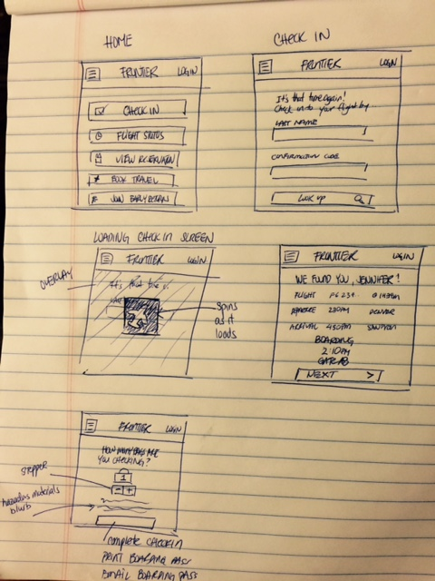
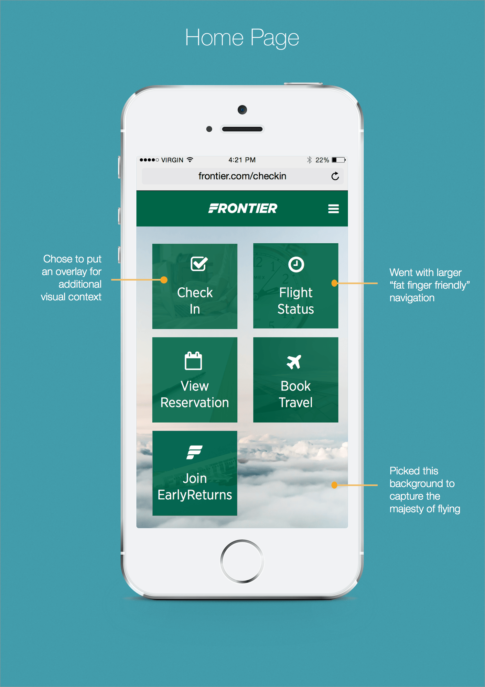
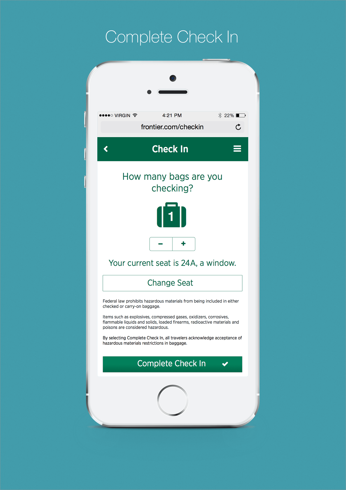
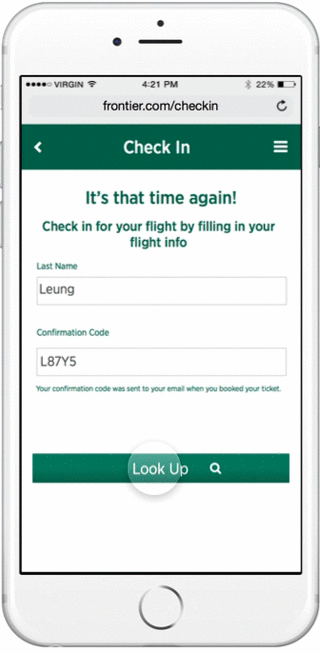

Frontier Airlines
Sketch 3, Wireframing, Pen & Paper, User Flow
Overview
I chose to redesign Frontier’s Check In process because this was the last time I remembered I was truly frustrated at the design of an interface. Upon research, I discovered that Frontier does not have a responsive mobile web version of their website nor do they have a mobile application. For the purposes of this redesign, I chose to tackle the redesign in the scope of mobile web.
Mobile web is not always considered the most important medium for a product, and it often gets overlooked in favor of desktop or native apps. However, in this case, I would argue that mobile web is very important, for a few reasons:
Travelers will largely not bother to download an app to check-in for a flight, unless they travel almost entirely on a single airline.
-
Travelers will often be without laptops or short on time, so they will use a mobile device for some significant portion of check-ins.
Checking in to a flight can and should be a quick and easy process.
Challenge
When I approached this project, my challenge was to design a seamless check in process for mobile web, a platform I hadn't previously designed for.
Approach
Define the Problem
Before I do anything, I always try to define the core problem that makes a product or process frustrating. I do this by approaching the problem through the user's eyes. This helps to bring out user pain points.
First, I analyzed the existing flow of how people check into their flights.
There were a number of things that I found to be problematic in the current flow.
1. The reminder email brings the user to a redundant page that outlines the check in options that are available. It adds an extra click. The page has yet another “Check In” button. Wasn’t clicking the “Check In” button from the email already signify that the user wanted to check in online?
2. When you click "Check In" a 2nd time, it directed the user to a magnified unresponsive homepage. I've included what it looks like below. My first reaction was confusion. I didn't know where I was directed to.
Only after I scrolled down, I realized it directed me to an anchored tab where I then would have to fill out the form and have to keep dragging to navigate anywhere. This poses a huge problem, because it will take the user at least 3 taps and 5 drags just to access their reservation.
Second, I took out the redundancies and streamlined the process.
Sketch
I typically do some rough sketches to get some ideas on paper.

HiFi Mockup
This is my 3rd iteration of the homepage. In this iteration, I increased the size of the buttons to help combat the "fat finger" error. I also changed the background from a more nature-y one to one that gives the nice fluffy feeling of flying above clouds. I liked this picture particularly because of the subtle, cooler colors that won't distract the user as much.

This will be the page that a user will see after clicking "Check In" from their email. I've included all the important information for the flight in a easily digestable way. The little plane departure and arrival icons can signal to the user where to quickly see when they will be leaving and arriving. Then finally, I thought a nice finishing touch would be to include the Flight Status so you can anticipate if your plane would be delayed or not.
This is the next screen in which you can use the stepper to confirm how many pieces of carryon you want to bring. Also, I wanted to highlight the seatFrom experience, I hate having to remember if I got the window seat or if I'm stuck in a middle seat. Having the screen tell you this instead of clicking into the laggy seat map saves a step and a couple clicks!

I started to envision how the flow would be if a user didn't come from a reminder email. The look up process for a reservation typically takes a bit longer, so I wanted to do something interactive and fun while the user waited. It also helps give the user visual feedback that it is doing something in the background. So anyways, Invision just wasn't cutting it, so I thought this was the perfect time to pick up Framer! I'm happy to say this is my first animation on Framer. I'm looking forward to doing more :)

If you want to see my iterations, they can be found HERE.